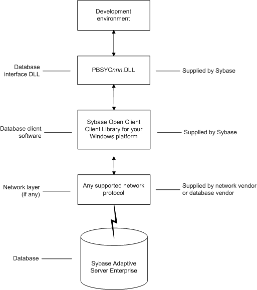

Preparing to use the Adaptive Server database
Before you define the interface and connect to an Adaptive Server database in PowerBuilder, follow these steps to prepare the database for use:
- Install and configure the required database server, network, and client software.
- Install the Adaptive Server database interface.
- Verify that you can connect to Adaptive Server outside PowerBuilder.
- Install the required PowerBuilder stored procedures in the sybsystemprocs database.
Preparing an Adaptive Server database for use with PowerBuilder involves these four basic tasks.
Step 1: Install and configure the database server
You must install and configure the database server, network, and client software for Adaptive Server.
 To install and configure the database server,
network, and client software:
To install and configure the database server,
network, and client software:
Make sure the Adaptive Server database software is installed on the server specified in your database profile.
You must obtain the database server software from Sybase.
For installation instructions, see your Adaptive Server documentation.
Make sure the supported network software (for example, TCP/IP) is installed and running on your computer and is properly configured so that you can connect to the database server at your site.
You must install the network communication driver that supports the network protocol and operating system platform you are using. The driver is installed as part of the Net-Library client software.
For installation and configuration instructions, see your network or database administrator.
Install the required Open Client CT-Library (CT-Lib) software on each client computer on which PowerBuilder is installed.
You must obtain the Open Client software from Sybase. Make sure the version of Open Client you install supports all of the following:
- The operating system running on the client computer
- The version of Adaptive Server that you want to access
- The version of PowerBuilder that you are running
 Required client software versions To use the ASE Adaptive Server interface, you must install
Open Client version 15.x or later. To use the SYC Adaptive Server
interface, you must install Open Client version 11.x or later.
Required client software versions To use the ASE Adaptive Server interface, you must install
Open Client version 15.x or later. To use the SYC Adaptive Server
interface, you must install Open Client version 11.x or later.Make sure the Open Client software is properly configured so that you can connect to the database at your site.
Installing the Open Client software places the SQL.INI configuration file in the Adaptive Server directory on your computer.
SQL.INI provides information that Adaptive Server needs to find and connect to the database server at your site. You can enter and modify information in SQL.INI by using the configuration utility that comes with the Open Client software.
For information about setting up the SQL.INI or other required configuration file, see your Adaptive Server documentation.
If required by your operating system, make sure the directory containing the Open Client software is in your system path.
Make sure only one copy of each of the following files is installed on your client computer:
- Adaptive Server interface DLL
- Network communication DLL (for example, NLWNSCK.DLL for Windows Sockets-compliant TCP/IP)
- Database vendor DLL (for example, LIBCT.DLL)
Step 2: Install the database interface
In the PowerBuilder Setup program, select the Typical install, or select the Custom install and select the Adaptive Server Enterprise (ASE or SYC) database interface.
If you work with PowerBuilder and EAServer, you should also select the Adaptive Server interface for EAServer (SYJ).
Step 3: Verify the connection
Make sure you can connect to the Adaptive Server database server and log in to the database you want to access from outside PowerBuilder.
Some possible ways to verify the connection are by running the following tools:
- Accessing the database server Tools such as the Open Client/Open Server Configuration utility (or any Ping utility) check whether you can reach the database server from your computer.
- Accessing the database Tools such as ISQL (interactive SQL utility) check whether you can log in to the database and perform database operations. It is a good idea to specify the same connection parameters you plan to use in your PowerBuilder database profile to access the database.
Step 4: Install the PowerBuilder stored procedures
PowerBuilder requires you to install certain stored procedures in the sybsystemprocs database before you connect to an Adaptive Server database for the first time. PowerBuilder uses these stored procedures to get information about tables and columns from the DBMS system catalog.
Run the SQL script or scripts required to install the PowerBuilder stored procedures in the sybsystemprocs database.
For instructions, see "Installing PowerBuilder stored procedures in Adaptive Server databases".
What to do next
For instructions on defining the Adaptive Server database interface in PowerBuilder, see "Defining the Adaptive Server database interface".
Defining the Adaptive Server database interface
To define a connection through the Adaptive Server interface, you must create a database profile by supplying values for at least the basic connection parameters in the Database Profile Setup - Adaptive Server Enterprise dialog box. You can then select this profile anytime to connect to your database in the development environment.
For information on how to define a database profile, see "Using database profiles".
 Defining a connection for a PowerBuilder custom class
user object deployed in EAServer You cannot use the SYJ interface to connect to the database
in the PowerBuilder development environment. However, the SYJ Database
Profile Setup dialog box provides a convenient way to set the appropriate
connection parameters and then copy the syntax from the Preview
tab into the script for your Transaction object.
Defining a connection for a PowerBuilder custom class
user object deployed in EAServer You cannot use the SYJ interface to connect to the database
in the PowerBuilder development environment. However, the SYJ Database
Profile Setup dialog box provides a convenient way to set the appropriate
connection parameters and then copy the syntax from the Preview
tab into the script for your Transaction object.
Using Open Client security services
The Adaptive Server interfaces provide several DBParm parameters that support Open Client 11.1.x or later network-based security services in your application. If you are using the required database, security, and PowerBuilder software, you can build applications that take advantage of Open Client security services.
What are Open Client security services?
Open Client 11.1.x or later security services allow you to use a supported third-party security mechanism (such as CyberSafe Kerberos) to provide login authentication and per-packet security for your application. Login authentication establishes a secure connection, and per-packet security protects the data you transmit across the network.
Requirements for using Open Client security services
For you to use Open Client security services in your application, all of the following must be true:
- You are accessing an Adaptive Server database server using Open Client Client-Library (CT-Lib) 11.1.x or later software.
- You have the required network security mechanism
and driver.
You have the required Sybase-supported network security mechanism and Sybase-supplied security driver properly installed and configured for your environment. Depending on your operating system platform, examples of supported security mechanisms include: Distributed Computing Environment (DCE) security servers and clients, CyberSafe Kerberos, and Windows NT LAN Manager Security Services Provider Interface (SSPI).
For information about the third-party security mechanisms and operating system platforms that Sybase has tested with Open Client security services, see the Open Client documentation. - You can access the secure server outside PowerBuilder.
You must be able to access a secure Adaptive Server server using Open Client 11.1.x or later software from outside PowerBuilder.
To verify the connection, use a tool such as ISQL or SQL Advantage to make sure you can connect to the server and log in to the database with the same connection parameters and security options you plan to use in your PowerBuilder application. - You are using a PowerBuilder database interface.
You are using the ASE or SYC Adaptive Server interface to access the database. - The Release DBParm parameter is set to the appropriate
value for your database.
You have set the Release DBParm parameter to 11or higher to specify that your application should use the appropriate version of the Open Client CT-Lib software.
For instructions, see Release in the online Help. - Your security mechanism and driver support the requested
service.
The security mechanism and driver you are using must support the service requested by the DBParm parameter.
Security services DBParm parameters
If you have met the requirements described in "Requirements for using Open Client security services", you can set the security services DBParm parameters in the Database Profile Setup dialog box for your connection or in a PowerBuilder application script.
There are two types of DBParm parameters that you can set to support Open Client security services: login authentication and per-packet security.
Login authentication DBParms
The following login authentication DBParm parameters correspond to Open Client 11.1.x or later connection properties that allow an application to establish a secure connection.
- Sec_Channel_Bind
- Sec_Cred_Timeout
- Sec_Delegation
- Sec_Keytab_File
- Sec_Mechanism
- Sec_Mutual_Auth
- Sec_Network_Auth
- Sec_Server_Principal
- Sec_Sess_Timeout
For instructions on setting these DBParm parameters, see their descriptions in online Help.
Per-packet security DBParms
The following per-packet security DBParm parameters correspond to Open Client 11.1.x or later connection properties that protect each packet of data transmitted across a network. Using per-packet security services might create extra overhead for communications between the client and server.
- Sec_Confidential
- Sec_Data_Integrity
- Sec_Data_Origin
- Sec_Replay_Detection
- Sec_Seq_Detection
For instructions on setting these DBParm parameters, see their descriptions in online Help.
Using Open Client directory services
The Adaptive Server interfaces provide several DBParm parameters that support Open Client 11.1.x or later network-based directory services in your application. If you are using the required database, directory services, and PowerBuilder software, you can build applications that take advantage of Open Client directory services.
What are Open Client directory services?
Open Client 11.1.x or later directory services allow you to use a supported third-party directory services product (such as the Windows Registry) as your directory service provider. Directory services provide centralized control and administration of the network entities (such as users, servers, and printers) in your environment.
Requirements for using Open Client directory services
For you to use Open Client directory services in your application, all of the following must be true:
- You are accessing an Adaptive Server database server using Open Client Client-Library (CT-Lib) 11.x or later software
- You have the required Sybase-supported directory
service provider software and Sybase-supplied directory driver properly
installed and configured for your environment. Depending on your
operating system platform, examples of supported security mechanisms
include: the Windows Registry, Distributed Computing Environment
Cell Directory Services (DCE/CDS), Banyan StreetTalk Directory
Assistance (STDA), and Novell NetWare Directory Services (NDS).
For information about the directory service providers and operating system platforms that Sybase has tested with Open Client directory services, see the Open Client documentation. - You must be able to access a secure Adaptive Server
server using Open Client 11.1.x or later software from outside PowerBuilder.
To verify the connection, use a tool such as ISQL or SQL Advantage to make sure you can connect to the server and log in to the database with the same connection parameters and directory service options you plan to use in your PowerBuilder application. - You are using the ASE or SYC Adaptive Server interface to access the database.
- You must use the correct syntax as required by your
directory service provider when specifying the server name in a
database profile or PowerBuilder application script. Different providers
require different syntax based on their format for specifying directory
entry names.
For information and examples for different directory service providers, see "Specifying the server name with Open Client directory services". - You have set the Release DBParm parameter to 11
or higher to specify that your application should use the behavior
of the appropriate version of the Open Client CT-Lib software.
For instructions, see Release (Adaptive Server Enterprise) in the online Help. - The directory service provider and driver you are using must support the service requested by the DBParm parameter.
Specifying the server name with Open Client directory services
When you are using Open Client directory services in a PowerBuilder application, you must use the syntax required by your directory service provider when specifying the server name in a database profile or PowerBuilder application script to access the database.
Different directory service providers require different syntax based on the format they use for specifying directory entry names. Directory entry names can be fully qualified or relative to the default (active) Directory Information Tree base (DIT base) specified in the Open Client/Server™ configuration utility.
The DIT base is the starting node for directory searches. Specifying a DIT base is analogous to setting a current working directory for UNIX or MS-DOS file systems. (You can specify a nondefault DIT base with the DS_DitBase DBParm parameter. For information, see DS_DitBase in the online Help.)
Windows registry server name example
This example shows typical server name syntax if your directory service provider is the Windows registry.
Node name: SALES:software\sybase\server\SYS12
DIT base: SALES:software\sybase\server
Server name: SYS12
 To specify the server name in a database profile:
To specify the server name in a database profile:
Type the following in the Server box on the Connection tab in the Database Profile Setup dialog box. Do not start the server name with a backslash (\).
SYS12
 To specify the server name in a PowerBuilder application
script:
To specify the server name in a PowerBuilder application
script:
Type the following. Do not start the server name with a backslash (\).
SQLCA.ServerName = "SYS12"
If you specify a value in the Server box in your database profile, this syntax displays on the Preview tab in the Database Profile Setup dialog box. You can copy the syntax from the Preview tab into your script.
DCE/DCS server name example
This example shows typical server name syntax if your directory service provider is Distributed Computing Environment Cell Directory Services (DCE/CDS).
Node name: /.../boston.sales/dataservers/sybase/SYS12
DIT base: /../boston.sales/dataservers
Server name: sybase/SYS12
 To specify the server name in a database profile:
To specify the server name in a database profile:
Type the following in the Server box on the Connection tab in the Database Profile Setup dialog box. Do not start the server name with a slash (/).
sybase/SYS12
 To specify the server name in a PowerBuilder application
script:
To specify the server name in a PowerBuilder application
script:
Type the following. Do not start the server name with a slash (/).
SQLCA.ServerName = "sybase/SYS12"
If you specify a value in the Server box in your database profile, this syntax displays on the Preview tab in the Database Profile Setup dialog box. You can copy the syntax from the Preview tab into your script.
Banyan STDA server name example
This example shows typical server name syntax if your directory service provider is Banyan StreetTalk Directory Assistance (STDA).
Node name: SYS12@sales@chicago
DIT base: chicago
Server name: SYS12@sales
 To specify the server name in a database profile:
To specify the server name in a database profile:
Type the following in the Server box on the Connection tab in the Database Profile Setup dialog box. Do not end the server name with @.
SYS12@sales
 To specify the server name in a PowerBuilder application
script:
To specify the server name in a PowerBuilder application
script:
Type the following. Do not end the server name with @.
SQLCA.ServerName = "SYS12@sales"
If you specify a value in the Server box in your database profile, this syntax displays on the Preview tab in the Database Profile Setup dialog box. You can copy the syntax from the Preview tab into your script.
Novell NDS server name example
This example shows typical server name syntax if your directory service provider is Novell NetWare Directory Services (NDS).
Node name: CN=SYS12.OU=miami.OU=sales.O=sybase
DIT base: OU=miami.OU=sales.O=sybase
Server name: SYS12
 To specify the server name in a database profile:
To specify the server name in a database profile:
Type the following in the Server box on the Connection tab in the Database Profile Setup dialog box. Do not start the server name with CN=.
SYS12
 To specify the server name in a PowerBuilder application
script:
To specify the server name in a PowerBuilder application
script:
Type the following. Do not start the server name with CN=.
SQLCA.ServerName = "SYS12"
If you specify a value in the Server box in your database profile, this syntax displays on the Preview tab in the Database Profile Setup dialog box. You can copy the syntax from the Preview tab into your script.
Directory services DBParm parameters
If you have met the requirements described in "Requirements for using Open Client directory services", you can set the directory services DBParm parameters in a database profile for your connection or in a PowerBuilder application script.
The following DBParm parameters correspond to Open Client 11.1.x or later directory services connection parameters:
- DS_Alias
- DS_Copy
- DS_DitBase
- DS_Failover
- DS_Password (Open Client 12.5 or later)
- DS_Principal
- DS_Provider
- DS_TimeLimit
For instructions on setting these DBParm parameters, see their descriptions in the online Help.
Using PRINT statements in Adaptive Server stored procedures
The ASE or SYC Adaptive Server database interface allows you to use PRINT statements in your stored procedures for debugging purposes.
This means, for example, that if you turn on Database Trace when accessing the database through the ASE or SYC interface, PRINT messages appear in the trace log but they do not return errors or cancel the rest of the stored procedure.
Creating a DataWindow based on a heterogeneous cross-database join
This functionality is available through the use of Adaptive Server's Component Integration Services. Component Integration Services allows you to connect to multiple remote heterogeneous database servers and define multiple proxy tables that reference the tables residing on those servers.
For information on how to create proxy tables, see the Adaptive Server documentation. For information on identifying identity columns in the underlying database tables referenced by proxy tables, see the technical note "Techniques for Working with Identity Columns in ASA Proxy Tables" on the Sybase Web site .
What to do next
For instructions on connecting to the database, see "Connecting to a database".